Ghid complet pentru machiaj natural
Machiaj natural pas cu pas
Obține un ten luminos și un look natural de zi
Cele mai bune produse pentru machiaj natural
Texturi ușoare pentru un efect „no makeup look”
Produse premium pentru machiaj natural
Efect „a doua piele” și finisaj natural, fără încărcare
Set de machiaj natural accesibil (sub 300 RON)
3 produse esențiale pentru un machiaj minimalist de zi
Ce este machiajul natural
Machiajul natural este o tehnică prin care pielea arată îngrijită, proaspătă și sănătoasă, fără acoperire densă. Scopul principal este să creezi efectul „pielea ta, doar mai bună”, fără senzația de încărcare.
Acest tip de machiaj este adesea numit machiaj nude, machiaj fără machiaj (no makeup look), machiaj natural sau skin-like makeup. Toți acești termeni descriu aceeași abordare — să evidențiezi frumusețea naturală, nu să o acoperi.
Spre deosebire de machiajul de seară, aici sunt importante straturile fine, pregătirea corectă a pielii și texturile ușoare. Pielea trebuie să „strălucească din interior”, nu să arate ca o mască mată.
Machiajul natural este ideal pentru viața de zi cu zi, birou, studii și chiar ședințe foto — oferă un aspect îngrijit, rămânând aproape imperceptibil.
👉 Află mai multe despre machiajul pentru ten gras
👉 Află mai multe despre machiajul pentru ten uscat
De ce machiajul natural este ideal pentru viața de zi cu zi
- nu încarcă pielea și lasă tenul să respire
- nu evidențiază textura, porii sau zonele uscate
- arată natural în orice lumină (zi sau artificială)
- perfect pentru zile active și temperaturi ridicate
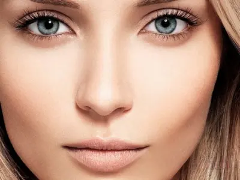
Pregătirea pielii pentru machiaj natural
Un machiaj natural reușit începe întotdeauna cu îngrijirea pielii. Chiar și cele mai bune produse de machiaj nu vor arăta bine dacă tenul este deshidratat sau are o textură neuniformă.
Pregătirea pielii ajută la netezirea suprafeței, îmbunătățește aplicarea fondului de ten și crește rezistența machiajului pe parcursul zilei. Este un pas esențial pentru obținerea unui ten luminos și natural.
- Curățare — produs delicat, fără să usuce pielea
- Hidratare — cremă sau gel adaptat tipului de ten
- SPF — protecție solară esențială pentru machiajul de zi
Lasă produsele de îngrijire să se absoarbă 5–10 minute înainte de aplicarea machiajului — astfel, baza va arăta uniform și nu se va strânge pe parcursul zilei.
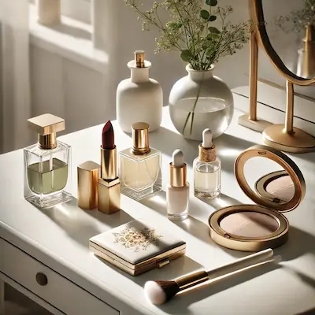
Machiaj natural pas cu pas

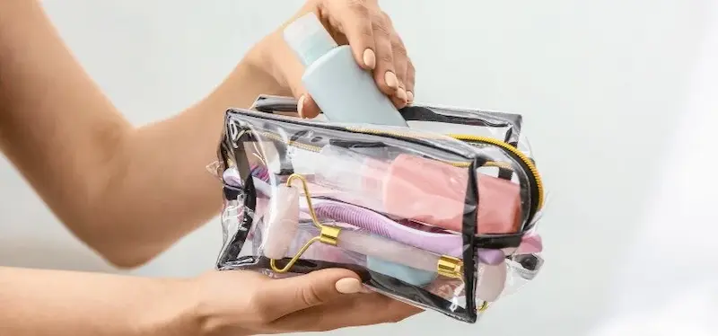
Machiajul natural se bazează pe simplitate și echilibru. Scopul este să evidențiezi frumusețea naturală a pielii, nu să o acoperi complet. Acest tip de machiaj de zi este ideal pentru un look fresh și un ten luminos, mai ales în sezonul cald.
Fond de ten lejer
Alege un BB cream sau un fond de ten lejer. Acesta trebuie să uniformizeze nuanța pielii fără să o încarce. Rezultatul dorit este efectul „pielea ta, doar mai bună”.
Corector (concealer)
Aplică local, doar unde este necesar: sub ochi, pe roșeață sau mici imperfecțiuni. Evită aplicarea în exces.
Pudră
Fixează ușor doar zona T. Nu matifia întreaga față — astfel păstrezi efectul de piele naturală și luminoasă.
Blush
Optează pentru texturi cremoase — se topesc în piele și oferă un aspect natural și sănătos.
Sprâncene și gene
Corecție minimă: sprâncene pieptănate și gene ușor definite. Fără linii dure sau efect artificial.
Buze
Un balsam sau nuanțe nude completează perfect un machiaj natural și oferă un aspect proaspăt.
Acest tip de machiaj evidențiază frumusețea naturală și este perfect pentru fiecare zi — fără efect de mască sau senzație de încărcare.
Top produse pentru machiaj natural
Pentru un machiaj natural reușit, alege produse cu texturi ușoare care se îmbină cu pielea și oferă un efect „no makeup look”.
Recenzie independentă. Produsele nu sunt sponsorizate.
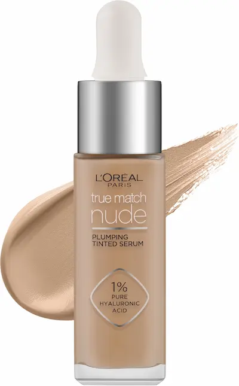
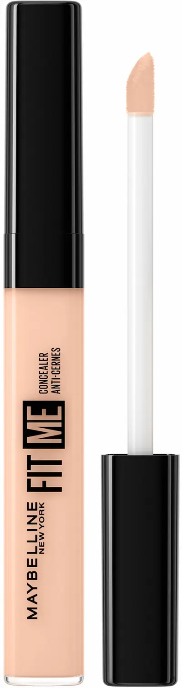
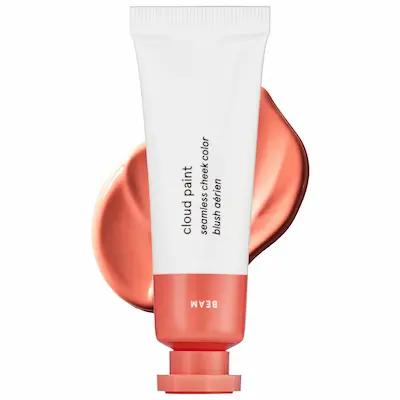
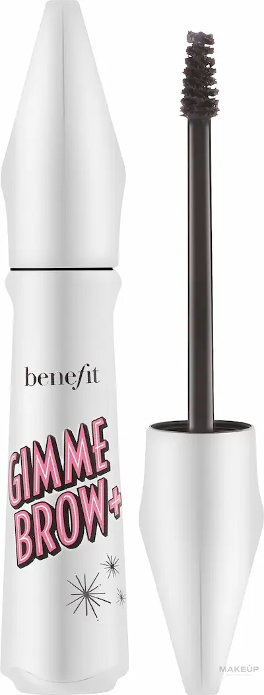
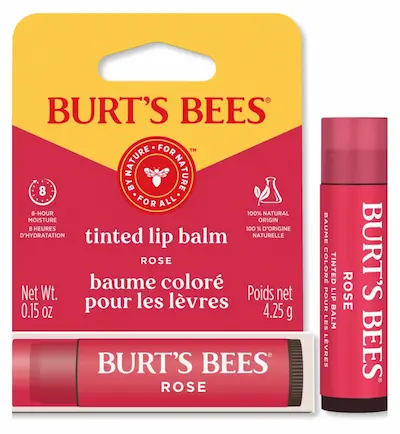
Greșeli frecvente în machiajul natural
- fond de ten prea încărcat
- exces de pudră
- conturare prea puternică
- texturi grele și neuniforme
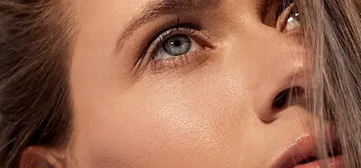
Set de machiaj natural accesibil (sub 250 RON)
💡 Cost total estimat: ~220–240 RON
Recenzie independentă. Produsele nu sunt sponsorizate.
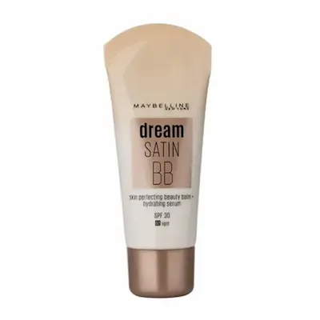
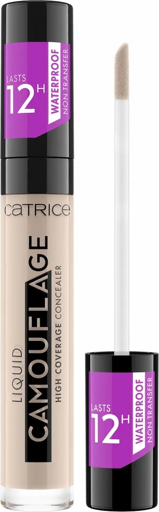
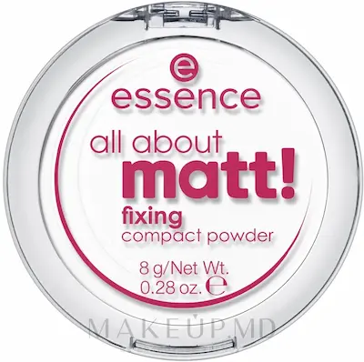
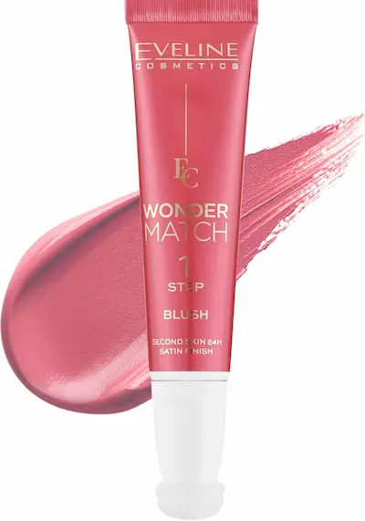
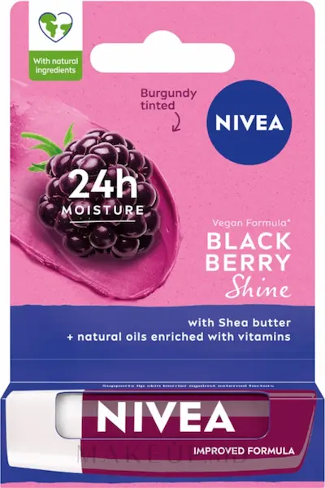
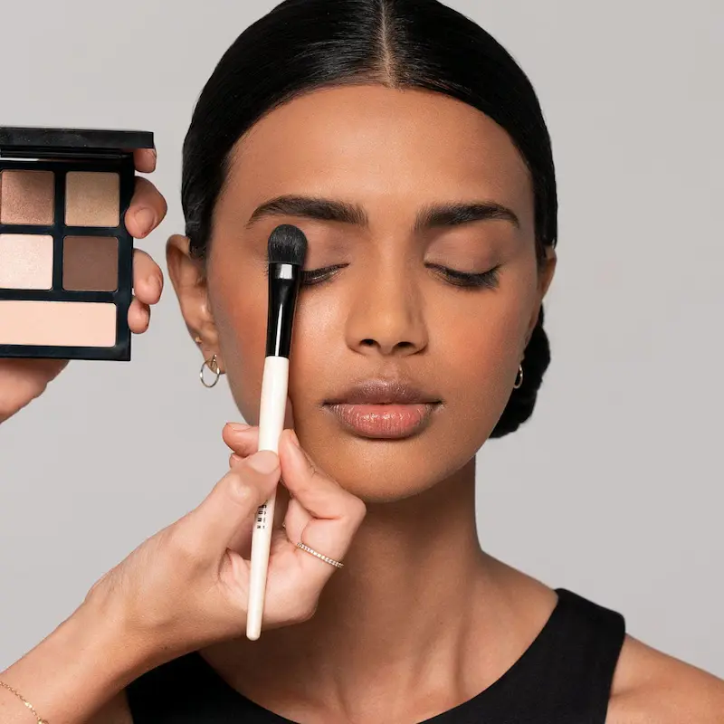
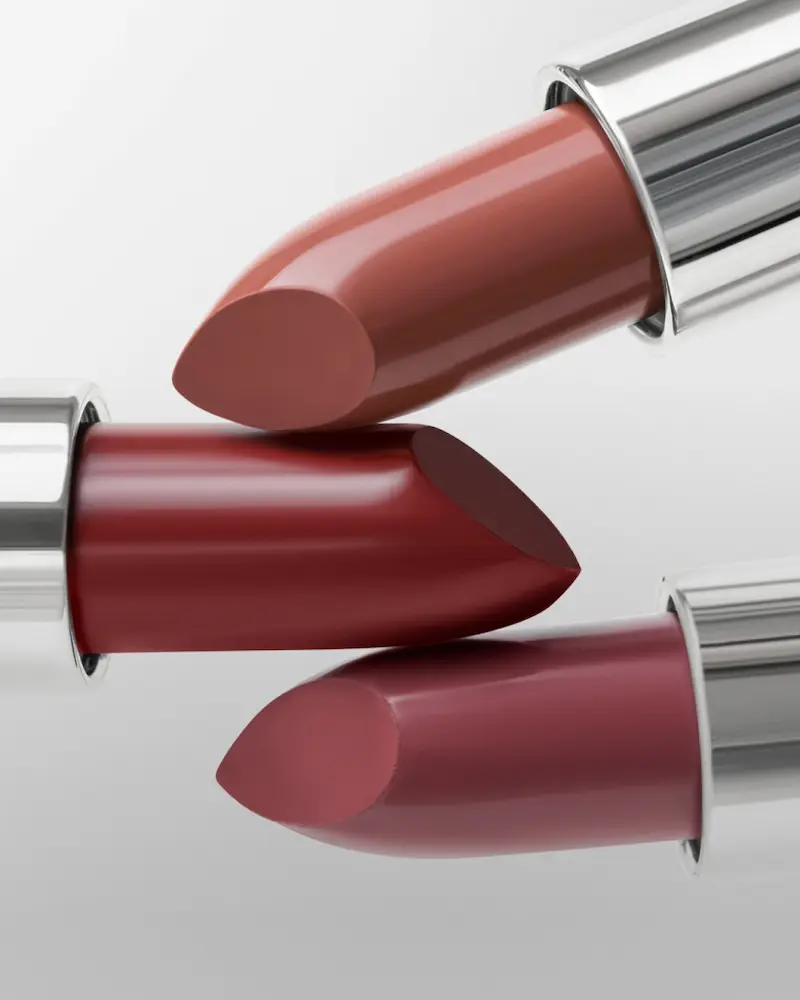
Nu ești sigură ce ți se potrivește?
Programează-te pentru un machiaj profesional adaptat tipului tău de ten, realizat de un specialist în beauty.
Programează-teÎntrebări frecvente despre machiajul natural
Este potrivit machiajul natural pentru tenul gras?
Da, dar este importantă pregătirea corectă a pielii. Folosește o cremă lejeră matifiantă, iar fondul de ten aplică-l în cantitate mică. Fixează doar zona T pentru un efect natural și echilibrat.
Care este diferența dintre machiajul natural și cel clasic?
Diferența principală este nivelul de acoperire. Machiajul natural nu acoperă complet tenul, ci doar uniformizează și evidențiază trăsăturile naturale.
Se pot acoperi imperfecțiunile sau acneea?
Da, dar local. În loc de fond de ten dens, folosește corector doar pe zonele necesare pentru a păstra efectul de „piele naturală”.
Cum pot face machiajul mai rezistent?
Totul începe cu pregătirea pielii. Hidratarea corectă și o bază lejeră ajută machiajul să reziste mai mult fără să încarce tenul.
Este potrivit pentru birou sau viața de zi cu zi?
Da, este una dintre cele mai bune alegeri pentru machiaj de zi. Oferă un aspect fresh, îngrijit și profesional în orice context.
Este necesară pudra în machiajul natural?
Da, dar în cantitate mică. Aplică doar în zonele unde tenul devine mai uleios pentru a păstra luminozitatea naturală.